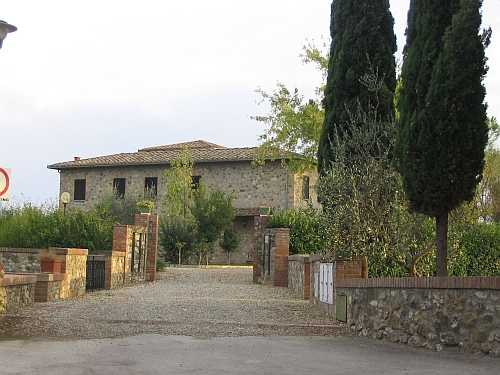

Nei pressi della fattoria di Macialla, i Piccolomini costruiscono un nuovo podere al quale assegnano alcune terre verso il Bozzone. L’edificio nasce all’inizio della strada per Passeggeri a duecento metri da Macialla. La data esatta non si conosce, ma dovrebbe collocarsi verso la metà del Settecento perché è nel 1749 che nei vari registri parrocchiali si comincia a precisare Macialla di Sotto o Macialla Inferiore, contrapposto a Macialla di Sopra. Vi abita da subito la numerosa famiglia colonica di Giulio Gabbrielli con 18 persone e Maciallina dovrebbe accogliere per circa mezzo secolo l’unico contadino della fattoria perché a Macialla risultano solo pigionali. Dai primo dell’Ottocento gli viene attribuito il nome di "Maciallina" e nel 1825 col nome di "Maciolino” è disegnato nel catasto leopoldino come una quadrata e robusta costruzione su due piani, con tutti gli annessi agricoli al piano terra, e capace di ospitare, come abbiamo visto, famiglie numerose. A fine Ottocento subisce trasformazioni interne per dare spazio a due famiglie, un pigionale e un contadino. Dopo il 1930, altri importanti lavori: si consolidano le pareti esterne con l’applicazione di tiranti in ferro; si ristruttura la stalla e nel primo piano le camere con la realizzazione di un’altra cucina per il nuovo contadino. Nel 1935 fanno entratura le famiglie dei Sanleolini e dei Lorenzetti. Ognuna avrà circa nove ettari di campi da coltivare. Prima di loro vi abitava una famiglia Mori e ancor prima i Vanni. Maciallina come sede di mezzadri finì nel 1962/63 dopodiché venne completamente restaurata sotto la proprietà Granelli. La storia padronale è quella di Macialla. Situata nel Comune di Castelnuovo, apparteneva alla parrocchia di Basciano per passare a Quercegrossa nel 1884. Tra le tante famiglie del passato che hanno vissuto a Maciallina si ricordano per la maggior presenza Masini Domenico e Domenico Bianciardi a metà Ottocento.
Maciallina vista dalla strada regionale con il vecchio podere appena riconoscibile dopo importanti lavori di ristrutturazione e ampliamento.
Capitolo successivo Magione
Inizio pagina
Vai all'Indice dei Capitoli